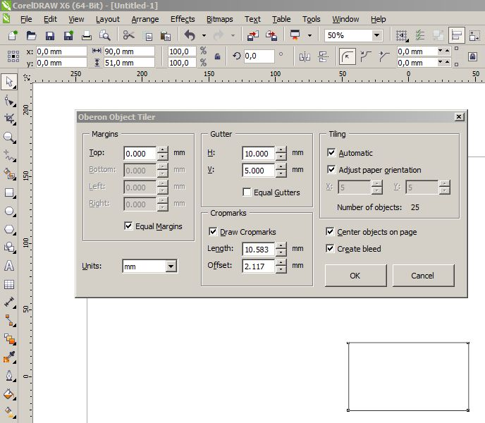

Макрос для X6, сохранении в старой версии.
Sirox / 21.08.2012, 13:45/00:41
Форум:
Версия программы:
16.1.0.843 (sp1)
Был скрипт wx.CDRSaveAsVersion, есть ли у кого он же для x6, x64. Или подскажите как его переделать. Думаю многим пригодится.
х64 под рукой нет ... проверить не на чем ... однако ... есть совет
в макросе эта строка вторая сверху
dastin, Спасибо огромное! Методом тыка нужно было добавить одну команду "PtrSafe"
Прикрепляю файл работающей версии
Sirox, Спасибо!
Sirox, огромное спасибо!!!
Х6 (32). При сохранении файлов в которых содержатся шрифты, закритие и последующее откритие документа приводит к тому что корел не может найти шрифт содержащийся в документе, (в системи он находится). В то время как обичное сохранение в родной версии без помощи макроса шрифты находит и работает без проблем. Как выличить даный баг?
(Версия сохранения файла у меня в 13, пробовал ставить 14, ошыбка все равно повторяется)
Скачал на всякий случай, возможно пригодиться. Спасибо...
вдруг понадобилось мне при использовании макроса от Oberon - Tiler - сделать разные
(а не как обычно одинаковые)
значения Gutter - выставил

... а вышел конфуз
- вертикальная раздвижка сработала, а горизонтальная нет
на сайте конечно выражена поддержка только Х5 ...
но вдруг - как у других пользователей Х6 с этим макросом?
Помогите установил я себе этот макрос wx_CDRSaveOldVersion на Corel DRAW Х5. Когда сохраняю им файлы становятся по размеру 5-6 раз больше. Например сохраняю без макроса файл весит 300мб. сохраняю с макросом становится 1,5гб. Это так должно быть или макрос не рабочий?